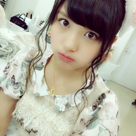
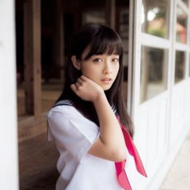

Codinging Studio
-
JeffMa
淘宝iOS程序员，狂拽酷炫叼炸天，天王盖地虎，宝塔镇河妖。
-
 KnightChu
QZone Android程序员，工龄0岁。梦想是成为前后通吃的设计师，粗通Android，Python和前端。
-
 MingLi
魅族底层开发程序员，狂拽酷炫叼炸天，天王盖地虎，宝塔镇河妖。
-

BradyWang
JLU软件本科学生，工龄-1年。梦想是成为一名不再是屌丝的程序猿屌丝。粗通Android和Java，单身。
-
CafeLi
JLU计算机本科学生，宇宙无敌杀马特，天王盖地虎，宝塔镇河妖。
-
Letterpress asymmetrical
Kale chips lomo biodiesel stumptown Godard Tumblr, mustache sriracha tattooed cray aute slow-carb placeat delectus. Letterpress asymmetrical fanny pack art party est pour-over skateboard anim quis, ullamco craft beer.
-
About Knight Chu
-
Brunch semiotics
IPhone PBR polaroid before they sold out meh you probably haven't heard of them leggings tattooed tote bag, butcher paleo next level single-origin coffee photo booth.
-
Bradywang
软件本科学生，工龄-1年。梦想是成为一名不再是屌丝的程序猿屌丝。粗通Android和Java，单身。
-
Kale chips lomo biodiesel
Chambray Schlitz pug YOLO, PBR Tumblr semiotics. Flexitarian YOLO ennui Blue Bottle, forage dreamcatcher chillwave put a bird on it craft beer Etsy.